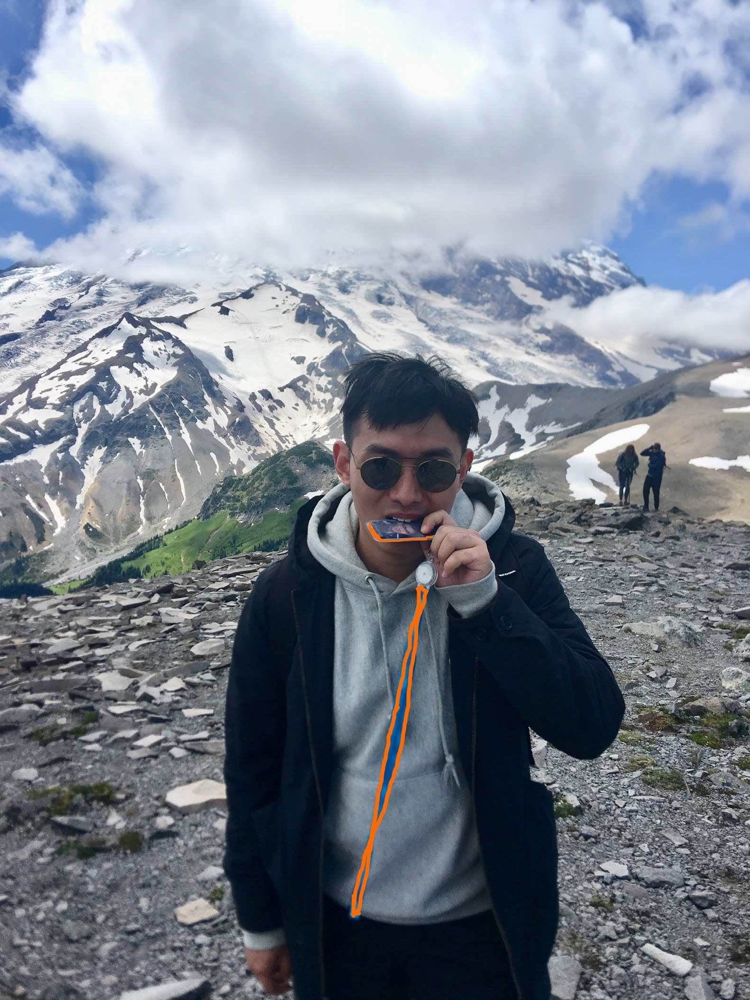
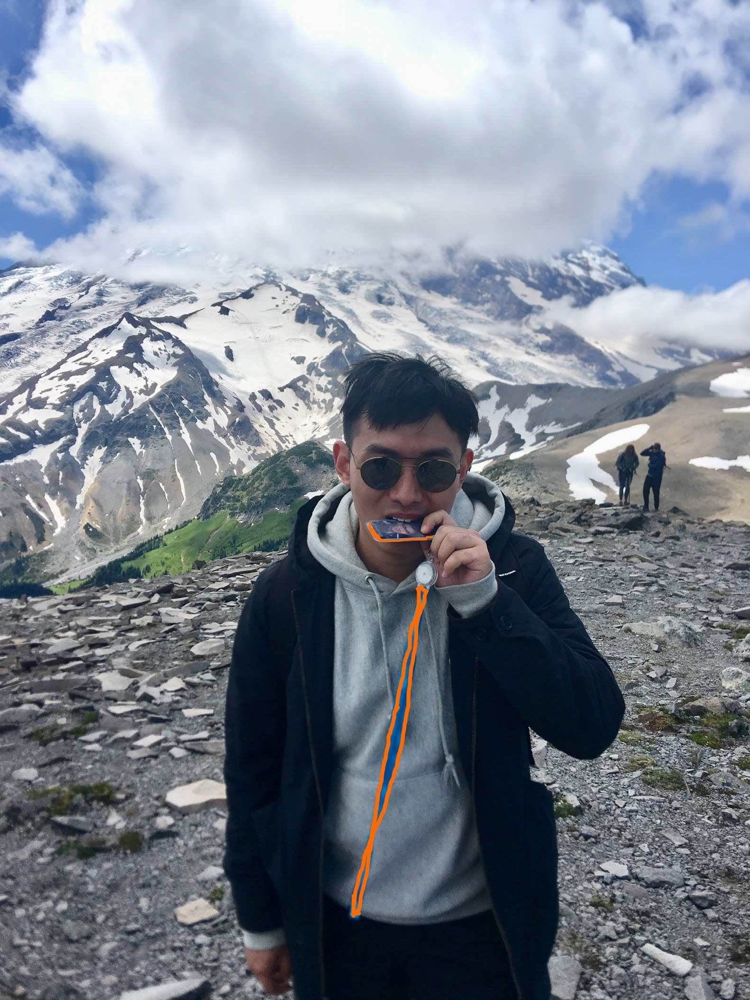

Yiming (Andy) Peng
 Seattle · WA
Seattle · WA
Hi 👋. I am a Software Engineer, working on App Runner, Beanstalk, Fargate and Elastic Containers. I live in Seattle (WA).
|
 |
Yiming (Andy) Peng
|
About MeCoder | Learner | Influencer, Experience• Software Development Engineer. Amazon Web Services, Inc., Seattle, WA, US. Pi Day, 2016 - Present. • Student Researcher. Mobile Evolution Lab, UMass Amherst. 2013 - 2014. (Advisor: Aura Ganz) • Student Intern. Luculent Software Co., Ltd., Nanjing, Jiangsu, China. 2011. Education• M.S. in Computer Engineering. UMass Amherst, MA, US. 2013 - 2016. • B.S. in Communication Engineering. Wuhan University of Technology, Wuhan, Hubei, China. 2009 - 2013. Honors and Awards• Top Tier Fellowship Student, Wuhan University of Technology • Outstanding Student Cadre, Wuhan University of Technology • Rose Scholarship Recipient (2005) |